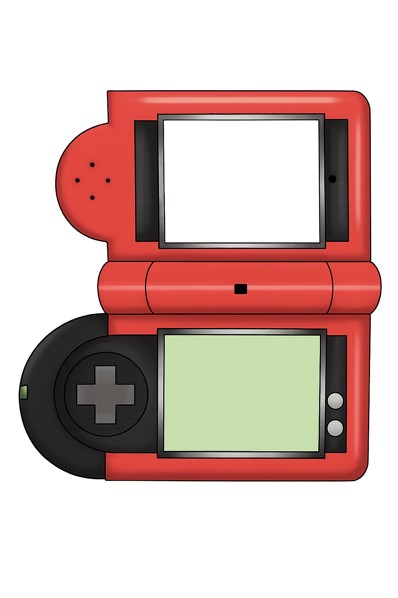

Le Pokédex, en japonais ポケモン図鑑 (se lisant Pokémon Zukan), signifiant « Encyclopédie Pokémon » est un objet technologique fictif de l'univers Pokémon : il s'agit d'une encyclopédie recensant les créatures fictives connues éponymes. Il permet d'enregistrer les informations sur les Pokémon. Dans les jeux vidéo Pokémon, le but du joueur est de compléter le Pokédex en capturant l'ensemble des 1025 espèces de Pokémon réparties en neuf générations bien qu'en réalité, il ne soit jamais possible d'attraper l'ensemble de ces Pokémon dans un même jeu de la licence.
Reçu au début de l'aventure, il permet d'identifier les Pokémon rencontrés ou capturés. Le joueur peut aussi voir quels Pokémon ne sont pas en sa possession. Les Pokémon capturés y ont une icône de Poké Ball dans la liste à côté de leur nom. Cet outil sert également à se renseigner sur les différentes espèces et permet de connaître l'habitat naturel d'un Pokémon dans la carte de la région, savoir sa taille et son poids, voir à quoi il ressemble, savoir son type, son empreinte et écouter son cri... Dans la liste du Pokédex, tous les Pokémon sont classés par numéro ou par ordre alphabétique. Il existe deux grands types de Pokédex : les Pokédex régionaux qui correspondent aux Pokémon répertoriés dans la région où l'on a obtenu ceux-ci ainsi que les Pokédex nationaux qui recensent tous les Pokémon connus à ce jour et les classent selon leur numéro national, ce qui a comme inconvénient de séparer les Pokémon apparentés lorsqu'ils ne sont pas tous de la même génération (ex : Roselia est un Pokémon de 3e Génération, mais son évolution Roserade et sa pré-évolution Rozbouton sont issus de la 4e Génération, dans le Pokédex national, les trois Pokémon ne se suivent donc pas).